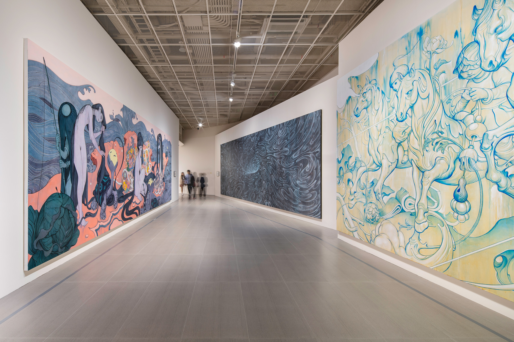
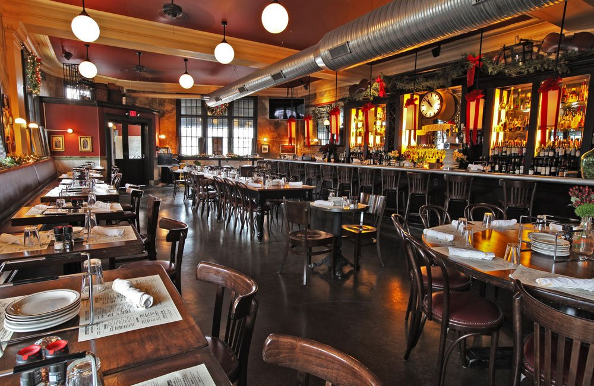

City Stuff
Meet your Entertainment needs in this weekly magazine.
|  | Arts |
| Art is a diverse range of human activities in creating visual, auditory or performing artifacts.The more recent and specific sense of the word art as an abbreviation for creative art or fine art emerged in the early 17th century. Fine art refers to a skill used to express the artist's creativity, or to engage the audience's aesthetic sensibilities, or to draw the audience towards consideration of more refined or finer work of art. In this magazine you will encounter the City's wide range of art from ranging from pre 1700s to the current timeline. To find out more about current art Click HERE . |
|
Music |
| Music is an art form, and cultural activity, whose medium is sound. General definitions of music include common elements such as pitch, rhythm, dynamics, and the sonic qualities of timbre and texture (which are sometimes termed the "color" of a musical sound). Different styles or types of music may emphasize, de-emphasize or omit some of these elements. Music is performed with a vast range of instruments and vocal techniques ranging from singing to rapping; there are solely instrumental pieces, solely vocal pieces (such as songs without instrumental accompaniment) and pieces that combine singing and instruments. This magazine takes the latest top songs from the world and gives you freedom to choose your liking from 2020. To find out more about current music Click HERE . |
| Movies | |
| Film, also called movie or motion picture, is a visual art-form used to simulate experiences that communicate ideas, stories, perceptions, feelings, beauty or atmosphere, by the means of recorded or programmed moving images, along with sound other sensory stimulations. The word "cinema", short for cinematography, is often used to refer to filmmaking and the film industry, and to the art form that is the result of it. This magazine takes everything available online or on theatres. Including netflix, disneyplus or any other forms of motion picture from past month and gives you a wide range of reviews and recommendations. To find out more about current movies Click HERE. |
|  | Dining |
| Restaurants vary greatly in appearance and offerings, including a wide variety of cuisines and service models ranging from inexpensive fast food restaurants and cafeterias, to mid-priced family restaurants, to high-priced luxury establishments. In Western countries, most mid- to high-range restaurants serve alcoholic beverages such as beer and wine. Some restaurants serve all the major meals, such as breakfast, lunch, and dinner (e.g., major fast food chains, diners, hotel restaurants, and airport restaurants). Other restaurants may serve only a single meal (for example, a pancake house may only serve breakfast) or they may serve two meals. Our top reviewers travel the nation in search for the best or bizarree dining experiences and give you a take on it. To find out more about current dining Click HERE. |
Please feel free to send us e-mails with any questions or concerns HERE.
Back to topCopyright 1999-2020 by JayStreetDesigns. All Rights Reserved.